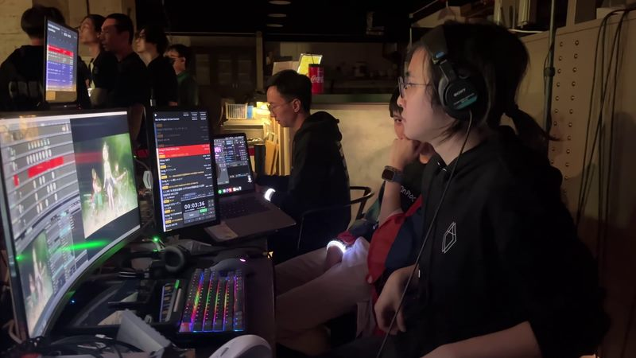

直接聯絡
電郵
適合洽談合作、技術總監、虛擬製作、活動製作、系統工程或軟件項目。
聯絡
可以由這裡開始討論虛擬製作規劃、現場製作系統、影像與視覺特效工作、製作軟件、教學項目，或同時需要創作與工程判斷的技術總監工作。
直接聯絡
適合洽談合作、技術總監、虛擬製作、活動製作、系統工程或軟件項目。
其他資料
可下載作品集和履歷，或查看軟件相關工作。
適合需要同時處理創作判斷與工程判斷的項目。
LED 製作棚規劃、Unreal / nDisplay 流程、攝影機追蹤、同步鎖相、鏡頭校正及現場操作程序。
動作捕捉、虛擬藝人、串流、媒體路由、演出控制及控制室設計。
自訂工具、AI 輔助流程、基建規劃及製作網絡。
聯絡前
請提供預期成果、時程、場地限制、拍攝或顯示格式、現有技術棧、預算概況，以及將會操作系統的人員。這些資料會令方案更容易同時滿足現場穩定度與作品表達。
